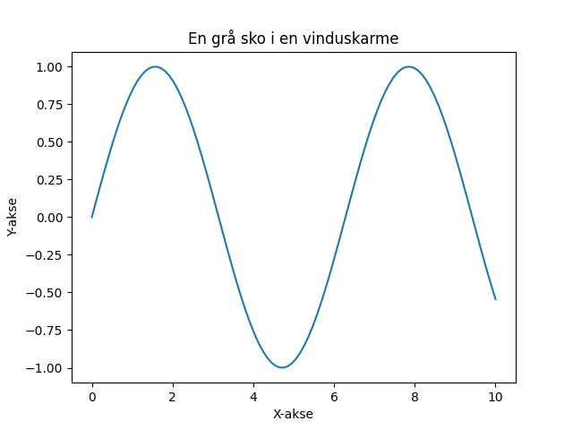

En grå sko, stående der, i en vinduskarme, still og nær. Den har sett regn og solens strå, nå venter den på en ny dag.

import matplotlib.pyplot as plt
import numpy as np
# Generer noen data for å lage en figur
x = np.linspace(0, 10, 100)
y = np.sin(x)
# Lag en figur og akse
fig, ax = plt.subplots()
# Plott dataene
ax.plot(x, y)
# Legg til tittell og etiketter
ax.set_title('En grå sko i en vinduskarme')
ax.set_xlabel('X-akse')
ax.set_ylabel('Y-akse')
# Lagre figuren
plt.savefig(output_path)execution_ok=True fallback_used=False image_ok=True